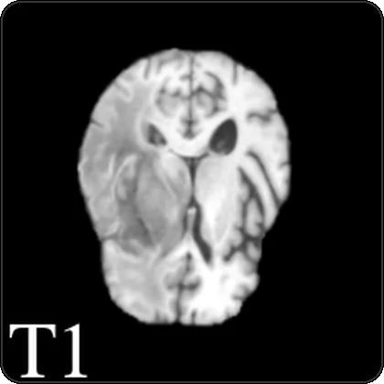
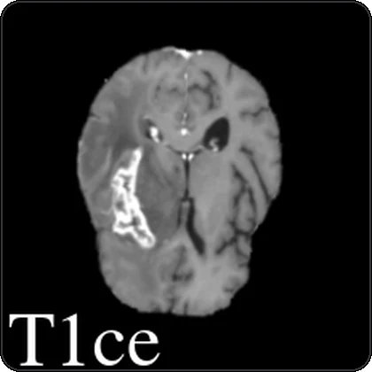
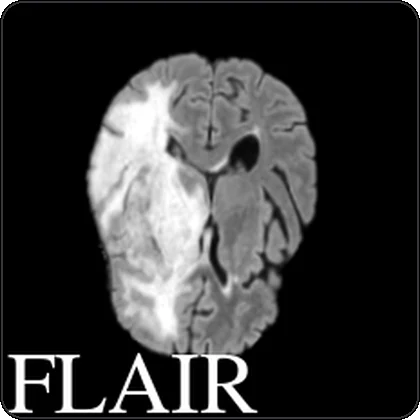
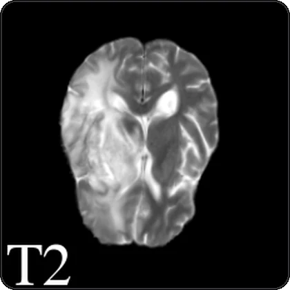
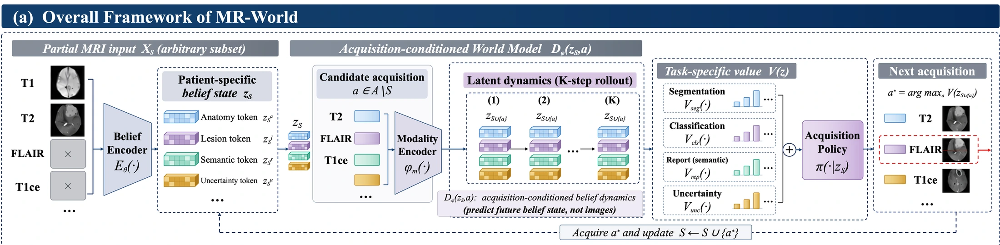
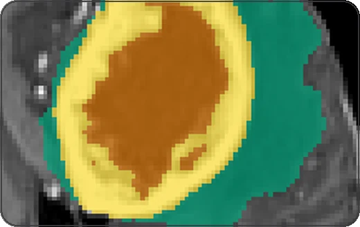
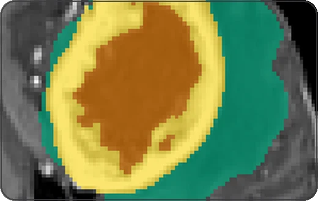
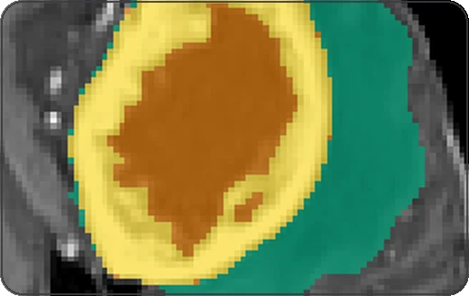

Active MRI acquisition
MR-World
A world model of the patient’s evidence. It predicts how each candidate MRI contrast would change what it knows, acquires the one worth scanning, and re-grounds its belief on every real image.
The question
Which scan should come next?
A brain MRI exam collects several contrasts, and each one costs scanner time. The same evidence serves tumour delineation, disease recognition and reporting. MR-World keeps one belief about the patient that all three can read, and uses it to decide what to measure next.




How it works
Encode. Imagine. Evaluate. Acquire.
Shared-subset supervision trains the belief across partial observations. Task adapters read it for segmentation, classification and reporting. Action-conditioned dynamics predict how it would change, task values pick the acquisition, and each real image re-grounds the state.
Any subset of contrasts
A belief encoder turns whatever has been acquired into a patient belief.
Before scanning
Action-conditioned dynamics predict the belief after each candidate contrast, without generating an image.
Score for the task
Task values rate each imagined belief for segmentation, classification, reporting or uncertainty.
Scan, then update
The policy takes the best contrast and re-grounds the belief on the real image.

Belief, live
Every real scan re-grounds the belief.
Real outputs of the paper’s model on BraTS test cases. Contrasts arrive one by one; the tumour segmentation read from the belief sharpens and its uncertainty shrinks to the boundaries.
Mean Dice over ET, WT and TC for the whole volume. On these cases MR-World’s path equals the clinical order. Uncertainty is the entropy of the belief’s segmentation.
Results
Better features. Better decisions.
The same belief serves segmentation and acquisition. With the clinical acquisition order, MR-World leads the compared segmentors with two and three contrasts.
Tumour segmentation Dice, two → three contrasts
BraTS-GLI, clinical acquisition order · hover a row



Case 1 of the paper’s segmentation figure, T1 + T1ce. Mean Dice in each corner. Yellow: enhancing tumour; orange: necrotic core; green: oedema.
A conditional regret bound links how well MR-World predicts evidence to how well it acquires.
Reports
Grounded reports. No invented findings.
The same belief drives report generation. On an MR-RATE case with a glioma and oedema, a fine-tuned medical vision-language model writes a fluent report that invents findings. MR-World’s report, read from the belief, matches the real ones.
HuatuoGPT-Vision
“… The 2 cm diameter metastasis located in the left superior frontal gyrus … It is observed that this metastatic area, containing punctate hemorrhage foci within it, has transformed into an abscess … intratumoral microhemorrhages have disappeared.”
Invented: metastasis, hemorrhage, microhemorrhage · Missed: glioma
MR-World
“Findings: A mass lesion with lobulated contours, approximately 49x48x48 mm in size, located in the white matter of the right frontal lobe, is observed. The majority is necrotic in character … with significant surrounding edema (glioblastoma ?).”
Matched: edema, glioma · Invented: none
Report keyword macro-F1 (×100), two contrasts
MR-RATE reports, fine-tuned models · hover a bar